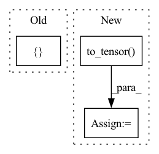

Pattern ID :20302
Before Change
num_label_chunks = 9
num_correct_chunks = 8
label_list = [ 1, 1, 0, 0, 1, 0, 1After Change
evaluator.reset()
lengths = paddle.to_tensor([5])
predictions = paddle.to_tensor([[0, 1, 2, 1, 2]])
labels = paddle.to_tensor( [[0, 1, 2, 1, 1]])
num_infer_chunks, num_label_chunks, num_correct_chunks = evaluator.compute(
lengths=lengths, predictions=predictions, labels=labels
)
evaluator.update(num_infer_chunks.numpy(), num_label_chunks.numpy(), num_correct_chunks.numpy())In pattern: SUPERPATTERN
Frequency: 4
Non-data size: 3
Instances Fragment ID: 65990938
Project Name: paddlepaddle/paddlenlp
Commit Name: 74c2a4eb19c767d9ab16b2bc8ac5a97219ae5a23
Time: 2023-03-16
Author: sijun.he@hotmail.com
File Name: tests/metrics/test_chunk.py
M Class Name: TestChunk
N Class Name: TestChunk
M Method Name: test_metrics(1)
N Method Name: test_metrics(1)
M Parent Class: unittest.TestCase
N Parent Class: unittest.TestCase
M File Name: tests/metrics/test_chunk.py
N File Name: tests/metrics/test_chunk.py
M Start Line: 22
M End Line: 28
N Start Line: 24
N End Line: 33
Before Change
s = np.random.uniform(1.0, 1.5) // random scaling factor
// data augmentations
transform = T.Compose([
T.Resize((288, 384)), // for computational efficiency
T.RandomRotation(5),
T.Resize(round(288 * s)),
T.RandomCrop((257, 353)),
T.RandomHorizontalFlip()After Change
color_jitter = T.ColorJitter(0.4, 0.4, 0.4)
rgb = color_jitter(rgb)
rgb = TF.to_tensor( rgb)
depth = TF.to_tensor(depth)
depth /= s // preserves world-space geometry of the scene
Fragment ID: 65990935
Project Name: liviniuk/dorn_depth_estimation_pytorch
Commit Name: 0ea97813b7efc228c977816051b52c28e61b596c
Time: 2020-03-31
Author: viktor.liviniuk@gmail.com
File Name: data.py
M Class Name: NYUDataset
N Class Name: NYUDataset
M Method Name: train_transform(3)
N Method Name: train_transform(3)
M Parent Class: Dataset
N Parent Class: Dataset
M File Name: data.py
N File Name: data.py
M Start Line: 53
M End Line: 68
N Start Line: 50
N End Line: 77
Before Change
img = self.to_tensor(img)
if self.img_size != 64:
img = F.interpolate(img.unsqueeze(0), size=self.img_size).squeeze(0)
return { "input": img}
After Change
output = {"input": img}
if self.all_instance_masks is not None:
ins = self.all_instance_masks[idx]
ins = self.to_tensor( ins)
if self.img_size != 64:
ins = F.interpolate(
ins.unsqueeze(0), size=self.img_size).squeeze(0)
output["instances"] = ins.type(torch.LongTensor)
return output Fragment ID: 65990932
Project Name: applied-ai-lab/genesis
Commit Name: 946fbd1bef531bb3b00bfc065afdcc25887496f6
Time: 2020-04-16
Author: 31702388+martinengelcke@users.noreply.github.com
File Name: datasets/multid_config.py
M Class Name: dSpritesDataset
N Class Name: dSpritesDataset
M Method Name: __getitem__(2)
N Method Name: __getitem__(2)
M Parent Class: Dataset
N Parent Class: Dataset
M File Name: datasets/multid_config.py
N File Name: datasets/multid_config.py
M Start Line: 110
M End Line: 113
N Start Line: 124
N End Line: 135
Before Change
def preprocess(self, input_text):
inputs = self.tokenizer(input_text)
inputs = left_padding(inputs, self.tokenizer.pad_token_id)
input_map = {
"input_ids": np.array(inputs["input_ids"], dtype="int64"),
}
return input_map
def infer(self, input_map):
results = self.model(paddle.to_tensor(input_map["input_ids"]))After Change
)
inputs_tensor = {}
for key, value in inputs.items():
inputs_tensor[key] = paddle.to_tensor( value)
return inputs_tensor
def infer(self, inputs):
with paddle.amp.auto_cast(False, level="O2", dtype=self.model.config.dtype): Fragment ID: 65990946
Project Name: paddlepaddle/paddlenlp
Commit Name: cd9b90e2339a664617b607015d8735e0d430dce2
Time: 2023-03-29
Author: 1435130236@qq.com
File Name: examples/language_model/bloom/predict_generation.py
M Class Name: Predictor
N Class Name: Predictor
M Method Name: preprocess(2)
N Method Name: preprocess(2)
M Parent Class: object
N Parent Class: object
M File Name: examples/language_model/bloom/predict_generation.py
N File Name: examples/language_model/bloom/predict_generation.py
M Start Line: 97
M End Line: 101
N Start Line: 55
N End Line: 66